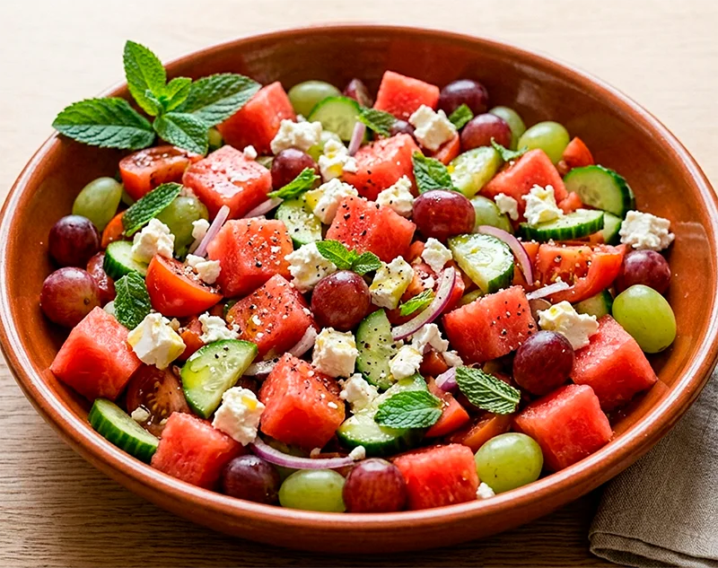

Receta saludable
Ensalada de sandía, uvas y feta
Una ensalada muy refrescante que combina sandía, uvas, pepino, tomate, cebolla morada y queso feta con un toque de menta, aceite de oliva, sal y pimienta.
Ingredientes
- 160 g de pechuga de pollo cruda
- 200 g de yogur griego 2 %
- 20 uvas
- 1/4 de sandía
- 1 pepino
- 1 tomate
- 1 cebolla morada pequeña
- 150 g de queso feta
- Hojas de menta al gusto
- Aceite de oliva virgen extra
- Sal
- Pimienta negra
Preparación
- Lava bien toda la fruta y la verdura.
- Corta la sandía en dados, parte las uvas por la mitad si lo prefieres y trocea el pepino y el tomate.
- Pica la cebolla morada en tiras finas.
- Pon todos los ingredientes en un bol amplio y añade el queso feta desmenuzado.
- Incorpora unas hojas de menta picadas o enteras, según te guste más.
- Aliña con aceite de oliva virgen extra, sal y pimienta al gusto.
- Mezcla con suavidad y sirve bien fresca.
Consejo práctico
Si la vas a preparar con antelación, añade el aliño y el queso feta justo antes de servir para que la ensalada conserve mejor la textura y la frescura.